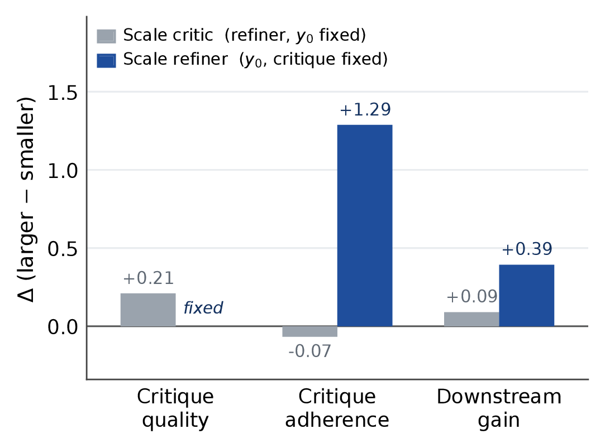
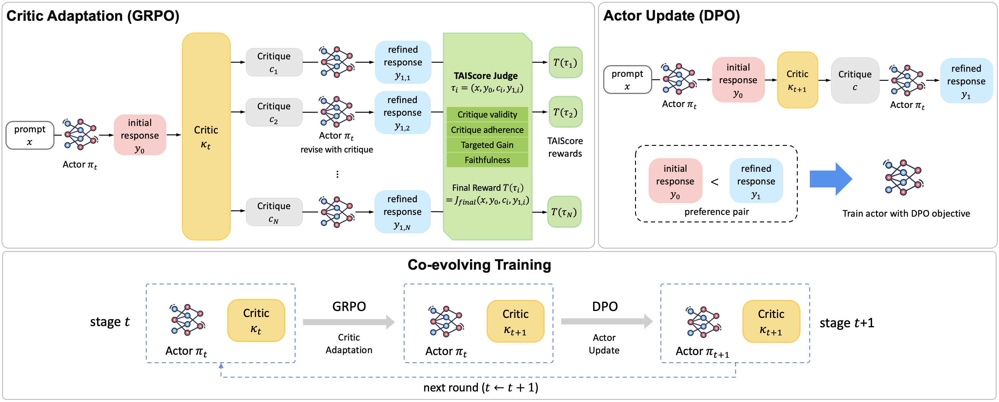
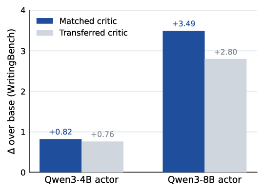

Natural-language critiques provide supervision beyond scalar rewards for non-verifiable generation, where quality is multi-dimensional and no deterministic verifier exists. In critique-guided refinement, a critic gives feedback on an initial response and an actor revises it. However, final revision quality does not reveal whether the critique was actually useful: a capable actor may improve without following the feedback, while valid feedback may fail if the actor cannot execute it.
We frame critique as actor-conditioned revision guidance, where usefulness depends on whether the feedback helps the target actor address the intended weakness. We introduce TAIScore (Targeted Actionable Improvement Score), a reward that evaluates the instruction, initial response, critique, and revision together, assessing whether the critique targets a real weakness, whether the actor follows it, and whether the intended aspect improves. We use this reward to train an actor-tailored critic with GRPO, and use critique-guided refinements to construct DPO preference pairs for the actor, forming a co-evolving critic–actor loop where the critic adapts to the actor's changing capability.
Experiments show that an 8B critic trained with TAIScore outperforms both a zero-shot 120B critic and critics trained with outcome-only or critique-only reward signals. Co-evolving the critic and actor further improves performance, suggesting that effective critique supervision should adapt as the actor changes.
We conduct controlled analyses on WritingBench to test whether critique usefulness is intrinsic to the critique or conditioned on the actor. We find two key asymmetries: scaling the critic consistently improves standalone critique quality but does not reliably lead the actor to incorporate that feedback or yield larger downstream gains; while scaling the actor (with the same critique fixed) substantially improves both how well the actor follows the feedback and downstream quality. This confirms that critique usefulness is a property of the critique–actor pair, not the critique alone.

Controlled zero-shot analysis of critique-guided refinement, summarized as mean deltas over controlled comparisons. Critic quality measures standalone feedback quality. Critique adherence measures how well the actor incorporates the critique into its revision (rather than making unrelated edits). Gain is the downstream improvement S(y1)−S(y0) under the WritingBench evaluator. Scaling the critic improves standalone critique quality but does not reliably lead the actor to follow the feedback or yield larger gains. In contrast, scaling the actor while keeping the same critique fixed produces substantially larger improvements in both feedback uptake and downstream quality.
Our approach has three components that together form a co-evolving loop:
These two updates alternate across rounds, forming a co-evolving loop: the critic continually adapts to the actor's current weaknesses, while the actor internalizes progressively stronger critique-guided revisions.

Overview of our co-evolving critic–actor training framework. For the current actor πt, the critic κt samples multiple critiques for the same initial response y0. Each critique produces a rollout τi = (x, y0, ci, y1,i). TAIScore evaluates each rollout and produces a GRPO reward for critic adaptation. The adapted critic κt+1 then generates critique-guided revisions, converted into DPO preference pairs y1 ≻ y0 to update the actor. Alternating these two updates yields co-evolving critics and actors.
We evaluate on two non-verifiable domains: creative writing
(WritingBench, HelloBench) and deep research (DeepResearch-Gym), using
Qwen3-8B as the actor. All trained-critic conditions use the same DPO
actor-training pipeline and differ only in how the critiques for DPO pairs are produced.
| Method | WritingBench | HelloBench | DeepResearch-Gym | |||
|---|---|---|---|---|---|---|
| Overall ↑ | OEQA ↑ | HTG ↑ | KPR ↑ | KPC ↓ | Quality ↑ | |
Qwen3-8B (base) |
72.33 | 34.86 | 38.89 | 71.93 | 1.18 | 81.85 |
| DPO pairs from off-the-shelf critics | ||||||
gpt-oss-120B critic |
75.04 | 35.63 | 50.47 | 73.12 | 1.16 | 82.35 |
| DPO pairs from trained critics (8B) | ||||||
| Outcome-gain reward | 75.38 | 34.97 | 44.58 | 74.19 | 1.12 | 82.37 |
| Critique-quality reward | 74.90 | 35.06 | 49.28 | 74.00 | 1.18 | 82.25 |
| TAIScore (ours) | 75.72 | 35.99 | 53.35 | 74.96 | 1.09 | 82.42 |
| Co-evolving critic–actor training | ||||||
| TAIScore + co-evolution (ours) | 76.08 | 38.96 | 53.54 | 75.55 | 1.06 | 82.80 |
Results averaged over multiple runs; standard deviations are reported in the paper. Best results in bold; second-best underlined.
We examine whether actor-tailored critics transfer across actors by applying critics trained
for Qwen3-4B and Qwen3-8B to both actors. Critics provide positive
gains even when transferred, suggesting that TAIScore learns broadly useful revision signals.
At the same time, the matched critic consistently obtains the highest score for both actors,
consistent with our actor-conditioned view that aligning the critic with the target actor
provides additional benefit.

Cross-policy transfer on WritingBench. Bars show the gain over the base actor (Δ) after DPO training; base scores are 72.19 (4B) and 72.33 (8B). Matched is the critic trained for that same actor; Transferred is the critic trained for the other actor.
@article{kim2026coevolving,
title = {Co-Evolving Actor-Conditioned Critics for Non-Verifiable Generation},
author = {Kim, Jinyoung and Khalifa, Muhammad and Logeswaran, Lajanugen and
Kim, Jaekyeom and Lee, Moontae and Lee, Honglak and Wang, Lu},
journal = {arXiv preprint},
year = {2026}
}